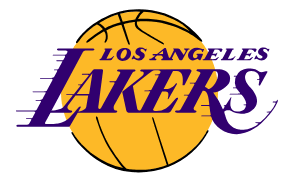
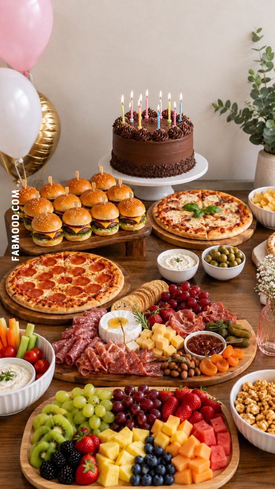

A Little About Me
My name is Vasco Wesseh, and I'm an aspiring software engineer teaching myself how to code.
I'm someone who enjoys learning, taking on new challenges, and finding ways to improve myself. Whether I'm working through a difficult programming problem or pushing myself during a run, I like seeing what I can accomplish through consistent effort.
Outside of technology, I'm a big sports fan, an outdoor enthusiast, and someone who loves discovering new food.
Three Things That Describe Me
- Curious - I enjoy learning new things.
- Determined - I keep working toward my goals.
- Adventurous - I love trying new experiences.
My Coding Journey
My coding journey officially began in January 2025.
I made the decision to teach myself programming and work toward becoming a professional software engineer.
I know that learning to code isn't something that happens overnight. I know i am going to get stuck, I know I am going to face challeges but I made a promise to myslef that I will learn this and achieve my goals. I already know I going to get trap in tutorial hell, to counter that, I will build small projects to keep me motivated even if i do not post it on github.
My goal isn't just to watch tutorials or memorize syntax. I want to be able to build cool projects that work and be able to explain it to others.
Why Software Engineering?
I would consider myself as a creative person that have tons of ideas and no I can not draw but with software engineer especially frontend, I can program the computer to build what ever idea that comes to mind and I find that to be very cool.
My long-term goal is to build a successful career in technology, starting with landing my first software engineering job.
My Learning Philosophy
"Learn it. Practice it. Build it. Improve it. Repeat."
I made a list of all the skills I need to become a software engineer
Udemy, youtube, mdn doc to learn, vs code to practice, vs code to build, upload to github. Google is my best friend, when I get stuck I am going to her for help.
I want to become the kind of developer who understands what he's building, not someone who only knows how to follow instructions.
My Software Engineering Roadmap
I'm following a structured learning journey, starting with the fundamentals and gradually moving toward more advanced technologies.
Technologies I'm Learning and Plan to Learn
- HTML - Structuring web pages
- CSS - Styling and responsive design
- JavaScript - Programming and interactivity
- Git and GitHub - Version control
- React - Building user interfaces
- TypeScript - Type-safe programming
- Next.js - Modern web applications
- REST APIs - Working with external data
- Node.js - Server-side JavaScript
- Databases - Storing and managing data
- Testing - Writing reliable software
- Cloud and Deployment - Launching applications
Building My Skills Through Projects
One of the biggest parts of my learning journey is building projects.
I plan to complete tons of capstone projects as I learn new technologies. Every project will be an opportunity to practice what I've learned, challenge myself, and build something from scratch.
My early projects will be simple, like this HTML website. As my skills improve, I'll build more advanced websites and applications.
I'll share my projects on GitHub so I can document my growth and demonstrate my skills to future employers.
My Career Goals
- Master the fundamentals of web development
- Become a confident frontend engineer
- Build a strong GitHub portfolio
- Learn how to build real-world applications
- Improve my problem-solving abilities
- Prepare for software engineering interviews
- Land my first software engineering job
Life Outside of Coding
As much as I enjoy technology, there's more to me than sitting in front of a computer.
Football and Basketball
I'm a big fan of both football and basketball. I enjoy watching games, following the competition, and playing whenever I get the opportunity.
I love how sports bring people together and how much teamwork, dedication, and practice they require.
Running and Staying Active
Running is one of my favorite ways to exercise. I especially enjoy running on outdoor trails and tracks.
It's a great way to clear my mind, enjoy some fresh air, and challenge myself physically.

Summer Days at the Beach
When summer comes around, one of my favorite places to be is the beach.
I love the beac, its so relaxingv to just go an swim or just sitout in the sun and sunbathe and enjoy the weather.
A Few of My Favorite Things
My Favorite NBA Team
Los Angeles Lakers!
I'm a huge Lakers fan. Basketball is one of my favorite sports, and I love supporting my team.

Visit the Lakers Official Website
Trying New Food
I'm the kind of person who loves trying something new when it comes to food.
I enjoy exploring different cuisines and discovering flavors from cultures around the world.
Whether it's a restaurant I've never visited or a dish I've never tried, I'm always interested in the experience.

My Ideal Day Off
A great day off for me might include a morning run, watching a basketball or football game, trying a new restaurant, and spending time outdoors.
And if it's summertime, a trip to the beach makes it even better.
Quick Facts About Me
- Coding since: January 2025
- Career goal: Software Engineer
- Learning style: Self-taught and project-based
- Favorite NBA team: Los Angeles Lakers
- Favorite exercise: Running
- Favorite summer activity: Going to the beach
- Something I enjoy: Trying new food from different cultures
Follow My Journey
This website is one of the first steps in documenting my journey as a self-taught developer.
As I continue learning, I'll be building more capstone projects and sharing my progress on GitHub.
If you'd like to see what I'm working on, check out my GitHub profile.
View My GitHub